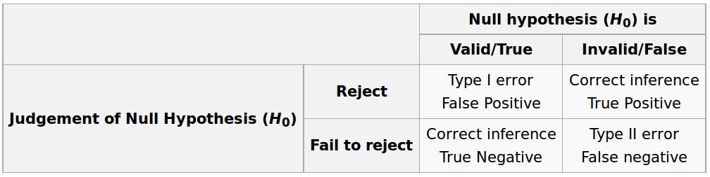
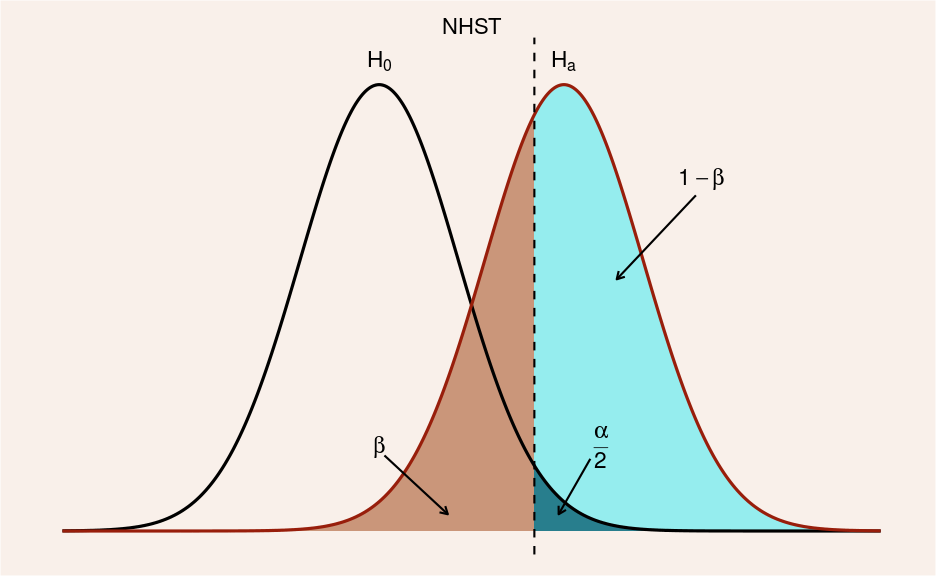
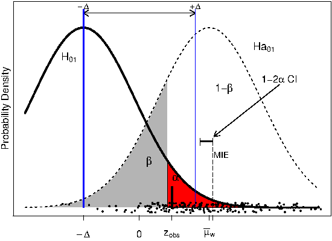
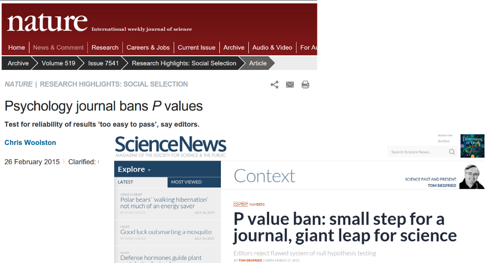

# scores: rows = datasets/runs, columns = models
friedman.test(as.matrix(scores))
# Pairwise Wilcoxon with Holm correction (illustrative)
pairwise.wilcox.test(
x = as.vector(as.matrix(scores)),
g = rep(colnames(scores), each = nrow(scores)),
p.adjust.method = "holm",
paired = FALSE
)
# Effect size example (two-model paired comparison)
# effsize::cliff.delta(modelA_scores, modelB_scores)22 Classical Hypothesis Testing
22.1 Learning Objectives and Evaluation Lens
- Objective: test statistical hypotheses while avoiding common misinterpretations.
- Primary outputs: test statistic, p-value, confidence interval, and effect size.
- Common pitfalls: treating p-values as effect magnitude and ignoring multiplicity.
22.2 Important topics often missing
- Effect size reporting (not only p-values)
- Multiple-testing correction when running many comparisons
- Practical significance in addition to statistical significance
- Assumption checks (normality, variance, independence)
In model evaluation studies, reporting only p-values is usually insufficient.
22.3 Comparing Multiple Models Across Datasets
In empirical SE, we often compare several models over multiple datasets or repeated splits. A robust workflow is:
- Use a nonparametric omnibus test (for example, Friedman) across all models.
- If significant, run post-hoc pairwise comparisons with multiplicity control.
- Report effect sizes (not only p-values).
Common choices:
- Two models: Wilcoxon signed-rank test on paired scores.
- More than two models: Friedman test + post-hoc Nemenyi/Holm-corrected tests.
- Effect size: Cliff’s delta or rank-biserial effect size for pairwise differences.
By “classical” we mean the standard “frequentist” approach to hypothesis testing. The “frequentist” approach to probability sees it as the frequency of events in the long run. We repeat experiments over and over and we count the times that our object of interest appears in the sequence.
The classical approach is usually called null hypothesis significance testing (NHST) because the process starts by setting a null hypothesis \(H_0\) which is the opposite about what we think is true.
The rationale of the process is that the statistical hypothesis should be falsifiable, that is, we can find evidence that the hypothesis is not true. We try to find evidence against the null hypothesis in order to support our alternative hypothesis \(H_A\)
Usually, the null hypothesis is described as the situation of “no effect” and the alternative hypothesis describes the effect that we are looking for.
After collecting data, taking an actual sample, we measure the distance of our parameter of interest from the hypothesized population parameter, and use the facts of the sampling distribution to determine the probability of obtaining such a sample assuming the hypothesis is true. This is amounts to a test of the hypothesis.
If the probability of our sample, given the null hypothesis is high, this provides evidence that the null hypothesis is true. Conversely, if the probability of the sample is low (given the hypothesis), this is evidence against the null hypothesis. The hypothesis being tested in this way is named the null hypothesis.
The goal of the test is to determine if the null hypothesis can be rejected. A statistical test can either reject or fail to reject a null hypothesis, but never prove it true.
We can make two types of errors: false positive (Type I) and false negative (Type II)
Type I and Type II errors

Two-tailed NHST

One-tailed NHST

elementary example
data = c(52.7, 53.9, 41.7, 71.5, 47.6, 55.1, 62.2, 56.5, 33.4, 61.8, 54.3, 50.0, 45.3, 63.4, 53.9, 65.5, 66.6, 70.0, 52.4, 38.6, 46.1, 44.4, 60.7, 56.4);
t.test(data, mu=50, alternative = 'greater')- Keeping this simple, we could start hypothesis testing about one sample median with the wilcoxon test for non-normal distributions.
- “ae” is the absolute error in the China Test data
median(ae)
mean(ae)
wilcox.test(ae, mu=800, alternative = 'greater') #change the values of mu and see the results- Quick introduction at https://psychstatsworkshop.wordpress.com/2014/08/06/lesson-9-hypothesis-testing/
22.4 p-values
- p-value: the p-value of a statistical test is the probability, computed assuming that \(H_0\) is true, that the test statistic would take a value as extreme or more extreme than that actually observed.
- http://www.nature.com/news/psychology-journal-bans-p-values-1.17001
- https://www.sciencenews.org/blog/context/p-value-ban-small-step-journal-giant-leap-science
